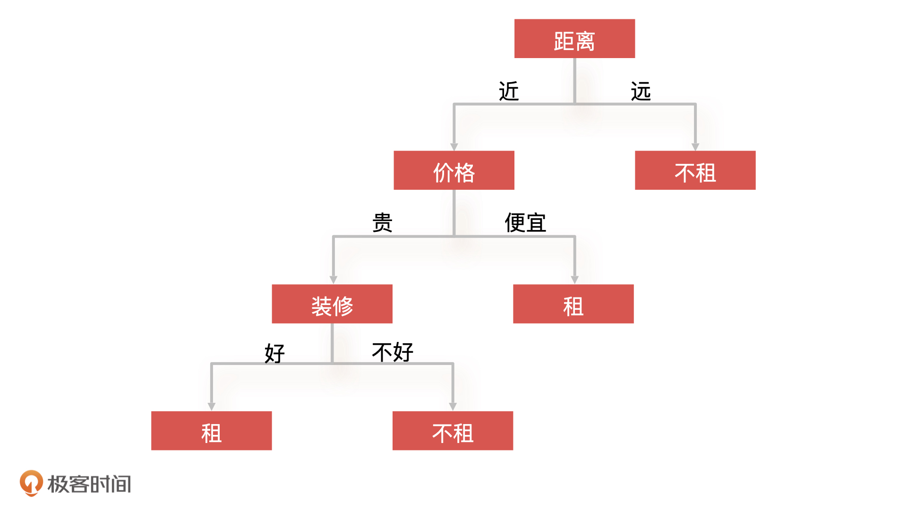
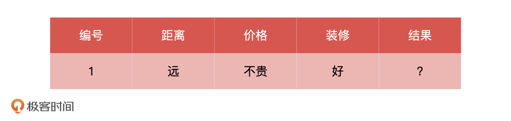
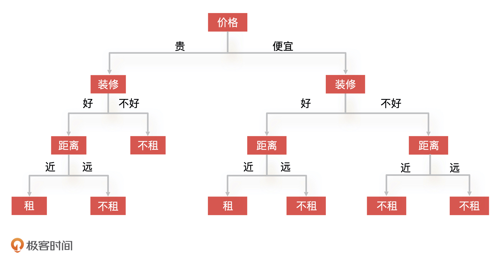
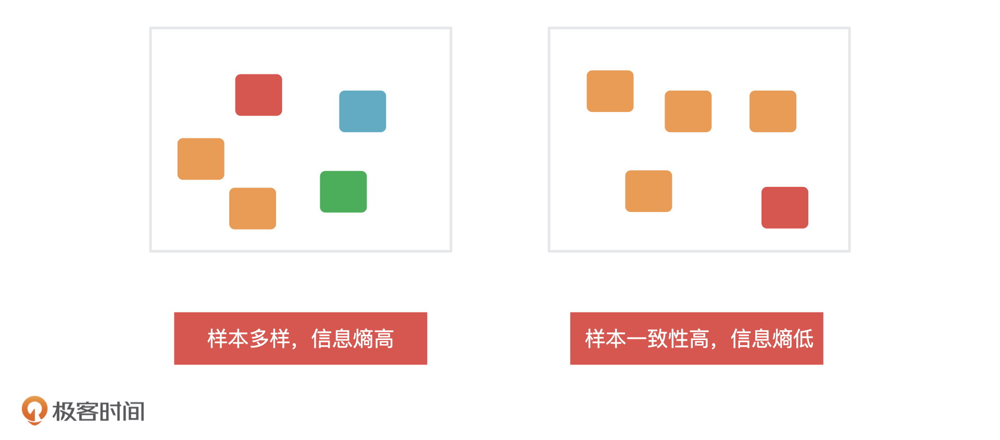
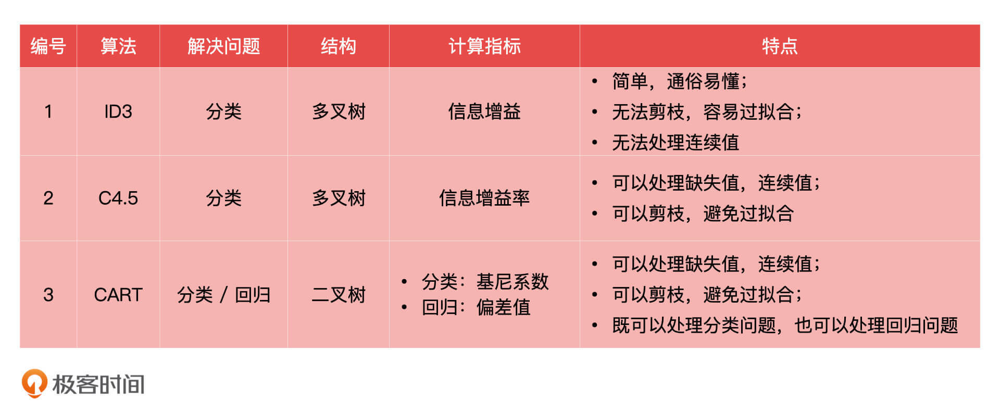
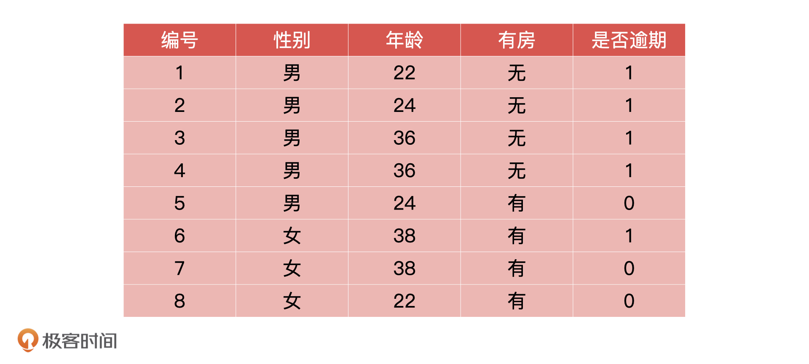
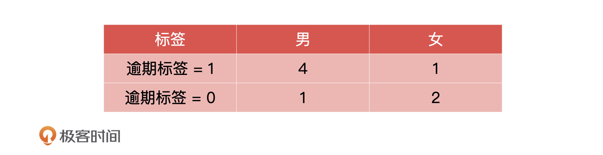
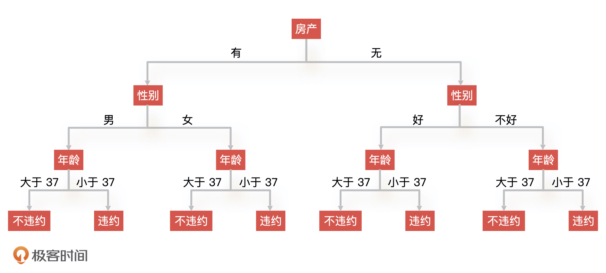
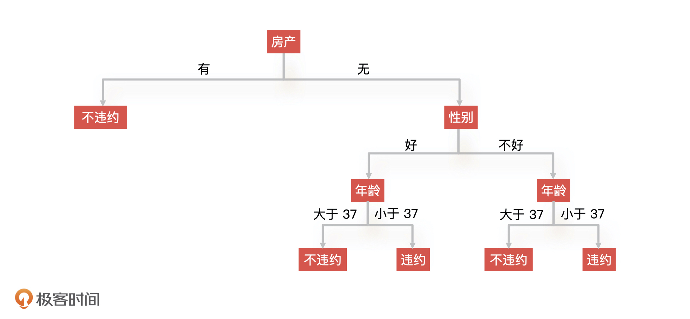
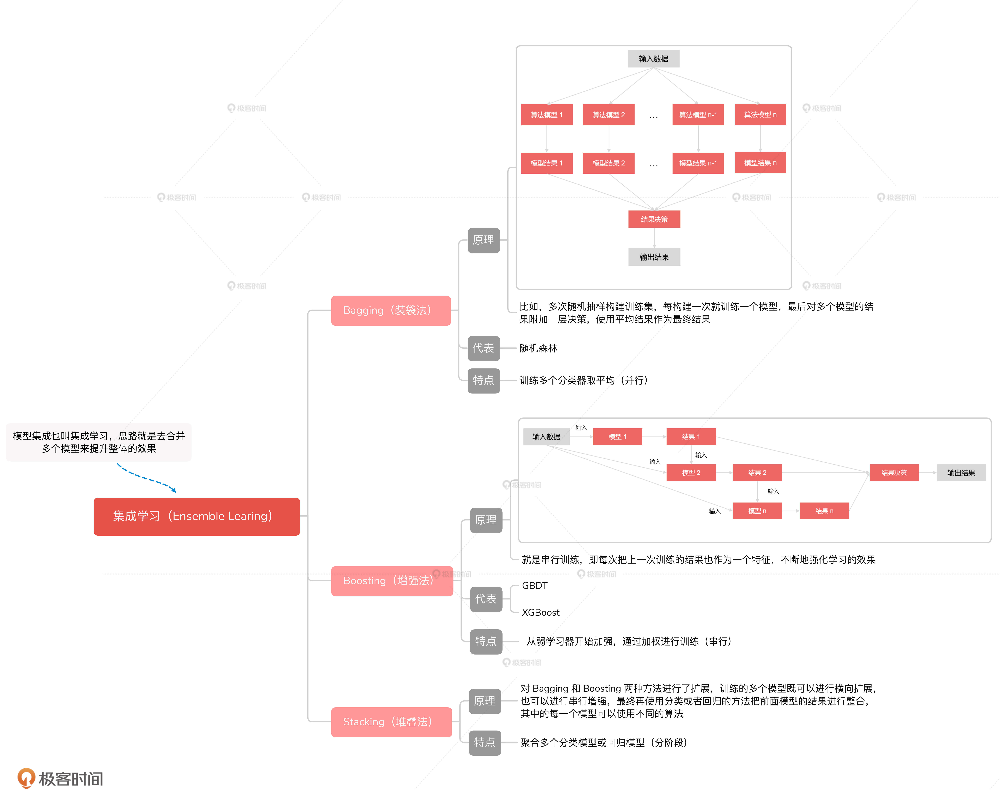

- 00 开篇词 你好，产品经理！你的未来价值壁垒在哪儿？.md.html
- 01 行业视角：产品经理眼中的人工智能.md.html
- 02 个人视角：成为AI产品经理，要先搞定这两个问题.md.html
- 03 技术视角：AI产品经理需要懂的技术全景图.md.html
- 04 过来人讲：成为AI产品经理的两条路径.md.html
- 05 通过一个 AI 产品的落地，掌握产品经理工作全流程.md.html
- 06 AI 模型的构建过程是怎样的？（上）.md.html
- 07 AI模型的构建过程是怎样的（下）.md.html
- 08 算法全景图：AI产品经理必须要懂的算法有哪些？.md.html
- 09 K近邻算法：机器学习入门必学算法.md.html
- 10 线性回归：教你预测，投放多少广告带来的收益最大.md.html
- 11 逻辑回归：如何预测用户是否会购买商品？.md.html
- 12 朴素贝叶斯：让AI告诉你，航班延误险该不该买？.md.html
- 13 决策树与随机森林：如何预测用户会不会违约？.md.html
- 14 支持向量机：怎么预测股票市场的涨与跌？.md.html
- 15 K-means 聚类算法：如何挖掘高价值用户？.md.html
- 16 深度学习：当今最火的机器学习技术，你一定要知道.md.html
- 17 模型评估：从一个失控的项目看优秀的产品经理如何评估AI模型？.md.html
- 18 核心技能：产品经理评估模型需要关注哪些指标？.md.html
- 19 模型性能评估（一）：从信用评分产品看什么是混淆矩阵？.md.html
- 20 模型性能评估（二）：从信用评分产品看什么是KS、AUC？.md.html
- 21 模型性能评估（三）：从股价预测产品看回归算法常用的评估指标.md.html
- 22 模型稳定性评估：如何用PSI来评估信用评分产品的稳定性？.md.html
- 23 模型监控：产品经理如何建设算法模型监控指标体系？.md.html
- 24 推荐类产品（一）：推荐系统产品经理的工作职责与必备技能.md.html
- 25 推荐类产品（二）：从0打造电商个性化推荐系统产品.md.html
- 26 预测类产品（一）：用户复购意向预测的底层逻辑是什么？.md.html
- 27 预测类产品（二）：从0打造一款预测用户复购意向的产品.md.html
- 28 预测类产品（三）：从0打造一款“大白信用评分产品”.md.html
- 29 自然语言处理产品：从0打造一款智能客服产品.md.html
- 30 AI产品经理，你该如何提升自己的价值？.md.html
- 31 AI产品经理面试，这些问题你必须会答！.md.html
- 春节加餐1 用户增长模型：怎么利用AI技术判断新渠道性价比？.md.html
- 春节加餐2 一次答疑，带你回顾模型评估的所有基础概念.md.html
- 期中周测试题 ，你做对了吗？.md.html
- 期中答疑 AI产品经理热门问题答疑合集.md.html
- 结束语 唯一不变的，就是变化本身！.md.html
- 捐赠
13 决策树与随机森林：如何预测用户会不会违约？
你好，我是海丰。
今天，我们要讲决策树与随机森林。决策树是一种基础的分类和回归算法，随机森林是由多棵决策树集成在一起的集成学习算法，它们都非常常用。
这节课，我就通过决策树预测用户会不会违约的例子，来给你讲讲决策树和随机森林的原理和应用。
如何理解决策树？
很多人都有过租房子的经历，那你是怎么决定要不要租一个房子的呢？你可以先想一想，我先把我的做法说一下，我会先判断房子的位置，再看价格，最后看装修。
更具体点来说，我只会选择离公司近的房子，比如说 5 公里以内的或者通勤时间在 40 分钟以内的。其次，如果价格便宜，不管装修得好不好我都租，如果价格贵那我就要看装修情况，装修好就租，装修不好就不租。
这就是一棵典型的决策树：对于租房子这个问题，我根据距离、价格、装修这几个条件 ，对一个房子进行了判断，最后得到一个解决结果，就是这个房子我是租或者不租。下图就是这棵决策树的示意图。

我们可以看到，决策树（Decision Tree）就是一种树形结构的算法，上面的节点代表算法的某一个特征（如距离、价格），节点上可能存在多个分支，每一个分支代表的是这个特征的不同种类（如距离远、距离近），最后的叶子节点代表最终的决策结果（如租、不租）。
决策树的生成
知道了决策树的形式和原理，我们再来看看决策树的生成过程，它是决策树的核心。不过，对于产品经理来说，更重要的还是掌握决策树的原理、形式、优缺点。那我把它的详细过程写在下面，就是让你在工作中遇到类似问题的时候，能直接回来补充必要的知识，所以今天我们先对整体过程有个大致了解就可以了。
决策树生成的过程包括三个部分，分别是特征选择、决策树生成、决策树剪枝。下面，我们还是拿上面租房子的例子，来说一说这个决策树生成的过程。假设现在有如下条件的一个房子，根据我上面定下的规则，你觉得这个房子我会不会租呢？

我们先看距离，因为这个房子距离公司远，所以根据上面的决策树，我们就能直接得出结论：不租。但是，假设我们的决策树不是用距离作为根节点，而是用价格作为根节点的话，结果会不会不一样呢？
这个时候，决策棵树可能会变成下面的样子：

你会发现，我们的决策树一下子变“大”了，判断这个房子的过程就变成了，先看价格，再看装修，最后看距离。我们发现，即使决策树的结构发生了变化，可我们还是会得到之前的结论：不租，所以，决策树的构造只会影响到算法的复杂度和计算的时间，而不会影响决策的结果。
因此，在实际工作中，我们就需要优化决策树的结构，让它的效率更高，但这具体该怎么做呢？
信息熵
我们一般会在特征选择和决策树的生成阶段，通过信息熵来决定哪些特征重要以及它们应该放到哪个节点上，因为信息熵是用来衡量一个节点内信息的不确定性的。一个系统中信息熵越大，这个系统的不确定性就越大，样本就越多样，你也可以理解成是样本的纯度越低，信息熵越小，系统的不确定性就越小，样本越趋于一致，那样本的纯度就越高。

我们肯定是希望决策树在每次划分的时候，每个条件分支都能够最大化地去划分这些样本，让每个节点的信息熵更低，样本一致性更高。所以，决策树会计算每一个特征划分后样本的“纯度”，纯度越高的特征越接近根节点。这样一来，决策树的复杂度和计算时间肯定就会越少，也就不会出现我们刚才说的那种“很大”的决策树。这就是实际工作中我们构造决策树的思路了。
实际上，决策树的算法有很多，最典型的三种分别是 ID3（Iterative Dichotomiser 3，迭代二叉树3代）、C4.5 和 CART（Classification and Regression Trees，分类与回归树）。ID3 是最初代的决策树算法，它使用的计算指标是信息增益；C4.5 是在 ID3 基础上改进后的算法，它使用的计算指标是信息增益率；CART 分类与回归树，做分类问题时使用的是 Gini 系数（Gini Coefficient，基尼系数），做回归问题的时候使用的是偏差值。
作为产品经理，我们简单了解这三种算法的特点就可以了，我在下面对它们进行了总结，你可以参考一下。

剪枝操作
最后，因为决策树很容易出现过拟合情况，所以我们还会引入剪枝操作这个环节。剪枝就是我们对一棵树进行简化，减少它的复杂程度，提高模型的泛化能力。剪枝的原理很好理解，主要就是判断把某个节点去掉之后，模型的准确度会不会降低了，如果没有降低，就可以减掉这个节点。
剪枝的操作还分为预剪枝和后剪枝，它们的区别是剪枝发生的阶段不同。预剪枝在决策树生成时候同步进行。而后剪枝是决策树生成之后，再对决策树的叶子节点开始一步一步地向根方向剪枝。
决策树的应用案例：预测用户违约
决策树的生成讲完了，我们重点来看看决策树的应用。在金融风控场景下，我们经常需要判断用户的违约风险。
最早的风控模型都是使用逻辑回归来做的，因为它相对简单而且可解释性强。但逻辑回归属于线性模型，不能很好处理非线性特征，所以决策树算法也慢慢用于违约风险的预测。接下来，我们就来看看决策树是怎么预测违约风险的。
决策树预测用户违约的核心思想是：先获取部分用户的历史数据，历史数据中包括过去的信贷数据和还款结果；然后将贷款客户不断进行分类，直到某个节点的样本用户都是同一个类型为止；最后，再对决策树进行剪枝，简化树的复杂度。
假设我们得到的用户历史数据如下所示。对于这个表格，我再补充解释一下，过去的信贷数据应该包括申请数据、金融产品相关数据等等。年龄，是否有房这些都属于申请数据，是包括在信贷数据里的。
还款结果指的是什么时候还款，还了多少，但是做模型设计，定义模型目标变量的时候，我们不可能直接用还款数据，所以我们定义是否逾期作为目标值，也就是 Y 值。1 代表逾期，0 代表不逾期。

因为目前决策树算法中，使用比较多的是 CART 算法，所以我们也选择它进行模型构建，而特征选择阶段会使用 Gini 系数。 CART 算法选择 Gini 系数，是因为信息熵模型使用了大量的对数计算导致效率很低，而 Gini 系统可以避免这个问题，从而提升计算效率。
从上面的历史数据中，我们可以提取出三个特征，分别是性别、年龄和是否有房。接下来，我们就分别计算一下这三个特征的 Gini 系数。
首先，性别特征的 Gini 系数直接根据公式计算就可以了，我们假设它就是 0.412。

我们重点来看第二个特征：年龄。年龄是一个连续的值，我们的历史数据中一共有 4 种数值，每两个相邻值之间都可以是一个特征分类的点（比如说，年龄 22 和年龄 24 的分类点就是23），所以对于年龄这个特征，我们一共有3种不同的分类方式。因为分类方式比较多，相对应的，Gini 的计算方式就会比较复杂，我们需要分别计算3种不同分类方式时的 Gini 系数，选出 Gini 最小的分类方式，把它作为年龄的分类。
假设年龄在 37 的时候 Gini 系数最小，等于 0.511，那么年龄这个特征的条件分支就是小于 37 和大于 37。
相同的，我们可以再计算是否有房的 Gini 系数。假设这个特征的 Gini 系数为 0.113，最后，根据 Gini 排序我们就能得到如下的决策树结构。

但是，这个决策树还不是最终的结构，因为有些节点我们是可以去掉的。比如说，我们发现有房产这个条件下面的所有节点，去掉和不去掉的时候模型准确性没有变化，那我们就可以把有房产下面的所有节点裁剪掉，从而得到新的决策树。
这就是剪枝操作，在我们实际工作中通常采取后剪枝的操作，从叶子节点逐步向上判断哪些节点是可以去掉的，剪枝后的决策树如下所示。

以上就是决策树创建的过程，因为没有进行实际计算，实际结果可能有偏差，你只要理解这个过程就可以了。
决策树的优缺点
通过上面的学习我们可以发现，决策树的优点和缺点都很明显。由于具有树形结构所以决策树的可解释性强，直观好理解，而且我们还可以从结果向上去追溯原因。采用决策树，我们可以很方便地和领导、业务方、甲方去解释我们的模型是什么，以及有哪些因素影响了模型的结果。
不过，决策树的缺点也非常明显。当数据量大，数据维度（样本具有的特征或者属性，如价格、位置）很多的时候，决策树会变得非常复杂，训练时间会很久。
另外，决策树还有一个很明显的缺点就是，需要算法同学手工设置决策树的深度（决策树要分多少层），如果设置了不合适的参数，就很可能造成欠拟合或者过拟合的情况。比如说，深度太浅就意味着你的叶子节点分得不干净，很容易造成欠拟合的情况，深度太深也会导致决策树训练时间太久，复杂度太高，很容易造成过拟合的情况。
随机森林：集体的力量
在实际工作中，我们既可以只使用一棵决策树来解决问题，也可以使用多棵决策树来共同解决问题，也就是随机森林。
随机森林（Random Forest）指的是由多棵决策树组成，随机指的是每一个决策树的样本是随机从数据集中采样得到的。假设， 模型由三个决策树A、B、C组成，我们给每棵决策树都随机抽取样本进行训练，由于这三棵树的训练样本不一样，因此它们最后得到的决策结果有可能不同。最后，我们再把这三棵树得到的结果做一个综合，就能得到最终的决策结果了。
随机森林的原理很好理解，那我们再来说说它的优缺点。因为这个算法是随机从数据集中进行采样的，所以模型的随机性很强，不容易产生过拟合的情况，但正因为样本是随机的，所以模型对于样本数据的异常值也不太敏感。
其次，因为算法采样的时候，是从整个数据集中抽取其中一部分进行采样，而且随机森林是由多棵树组合而成的，所以模型中的每一棵决策树都可以并行训练和计算，这样一来，在面向大数据量的情况下，随机森林的运行效率更高。
也正是因为这样，随机森林在训练时候需要的计算成本会更高，而且，就算它们整合之后会比之前单一模型表现好，但在面对复杂样本的时候，它们仍然没有办法很好区分，所以模型上限很低。
随机森林属于集成学习中的一种。集成学习（Ensemble Learning）可以理解为，不是通过某一个单独的机器学习算法解决问题，而是通过多个机器学习算法结合使用来完成最终的算法，最终达到 1+1>2 的效果。核心原理你可以记成是我们常说的“三个臭皮匠赛过一个诸葛亮”。
集成学习的内部由很多弱监督模型组成， 某一个弱监督模型只在某一个方向上表现比较好，当我们把这些算法合而为一的时候，就会得到一个各方面都会表现较好的模型。集成学习的算法有很多，随机森林是其中比较有代表性的一种。我在下面整理了一个集成学习的思维导图，你可以了解一下。

总结
今天，我们讲了决策树、随机森林的原理、应用和优缺点。理解决策树是理解随机森林和集成学习的基础，不过，作为产品经理，我们的重点不在于理解决策树的生成过程，只是借着它的生成加深对决策树原理和应用的理解。
总的来说，关于决策树和随机森林，我希望你重点记住这 5 点：
决策树就是一种树形结构的算法，它很直观，可视化很强，但也容易过拟合；
决策树特征选择是生成决策树的基础，不同的算法对应了不同的特征选择方式；
集成学习是多个机器学习算法的结合；
随机森林是集成学习中的一种，由多棵决策树组成；
随机森林的原理你可以记成：三个臭皮匠赛过一个诸葛亮，它的特点你可以记成：模型起点高、天花板低。
除此之外，关于决策树和随机森林的应用场景我还想再强调一下。决策树和随机森林模型的可解释度都很高，这就意味着我们可以轻松地把模型的计算逻辑介绍清楚。
实际上，这一点对于咨询、金融、医疗领域的公司来说非常重要，因为你的客户往往不懂你的模型内部在做什么，但如果你的模型结构清晰，你就能在最短的时间内介绍出模型的优势。而且，因为随机森林这样的集成学习算法融合了多个模型的优点，所以对于解决分类问题来说，决策树和随机森林是当今的机器学习算法的首选，就比如你可能听过的 GBDT、XGBoost 就是决策树的升级版。
课后讨论
因为产品经理不需要实际进行模型的构建，所以我不会让你去构建一棵决策树，我想请你来梳理一下，你所在的团队中有哪些项目是基于决策树、随机森林或者是升级算法解决的呢？
欢迎在留言区分享你的经验，我们下节课见！
© 2019 - 2023 Liangliang Lee. Powered by gin and hexo-theme-book.